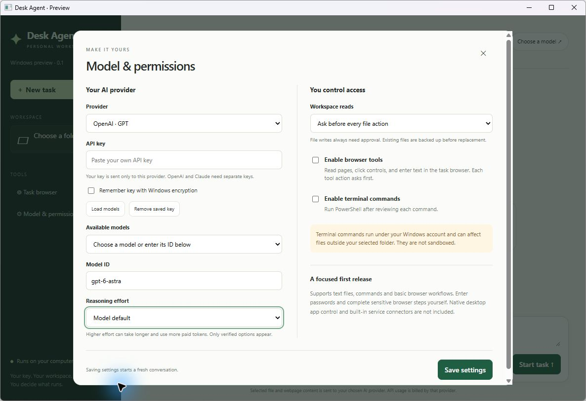

Make real changes.
Choose a project folder. Read text files, create documents or edit code. Review every write; replaced files are backed up.
An AI assistant that can work on your files, run commands and use a task browser—with your approval. Connect your own OpenAI or Claude API key.
Windows 10/11 · x64 · Portable ZIP · Unsigned preview
Includes .NET. Requires Microsoft Edge WebView2 Runtime and a funded provider API account.
Choose a project folder. Read text files, create documents or edit code. Review every write; replaced files are backed up.
Enable PowerShell commands or basic browser workflows. Review the exact action and choose Allow once or Deny.
Use OpenAI or Claude. Load models available to your key and adjust reasoning where the model supports it.

DeskAgent.exe and keep its ui folder beside it.Supports text files, approved commands and basic tasks in its own browser. General control of other desktop apps and built-in Gmail/Slack integrations are not included.
Approved content is sent to your chosen AI provider and API usage is billed by that provider. Remembering a key is optional and uses Windows encryption. Terminal commands run with your Windows account permissions, can affect files outside the chosen folder, and are not sandboxed.
33 automated checks passed using real local file and command operations plus simulated provider responses. Live API and complete website workflows still need validation with your own key. This preview has no signed installer or automatic updates.